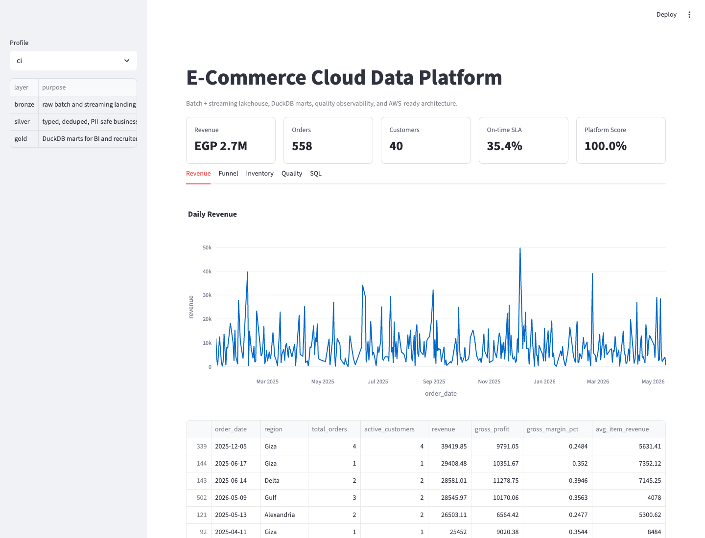

E-Commerce Cloud Data Platform
A local/AWS-ready data platform for e-commerce operations with batch and streaming ingestion, lakehouse layers, DuckDB/dbt marts, Airflow orchestration, quality checks, Docker, Terraform, and a Streamlit console.
Full profile250k+ orders
Event volume5M+ events
Quality score100%
Gold marts9
Data Flow
Raw sources
Bronze lake
Silver entities
Gold marts
Console
Console Preview

Sample Quality Checks
| Check | Status | Observed | Expected |
|---|---|---|---|
| contract_quality_floor | pass | 96.15 | >= 95 |
| gold_mart_count | pass | 9 | >= 9 |
| late_event_rate | pass | 0.0004 | <= 0.05 |
| positive_revenue | pass | 2,738,512.51 | > 0 |
Run Locally
Install the package and run commerce-platform smoke --profile ci, then open the console with
streamlit run app/streamlit_console.py.